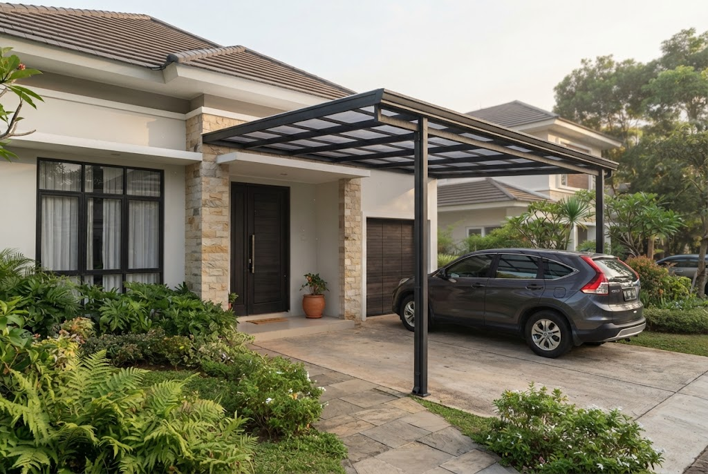
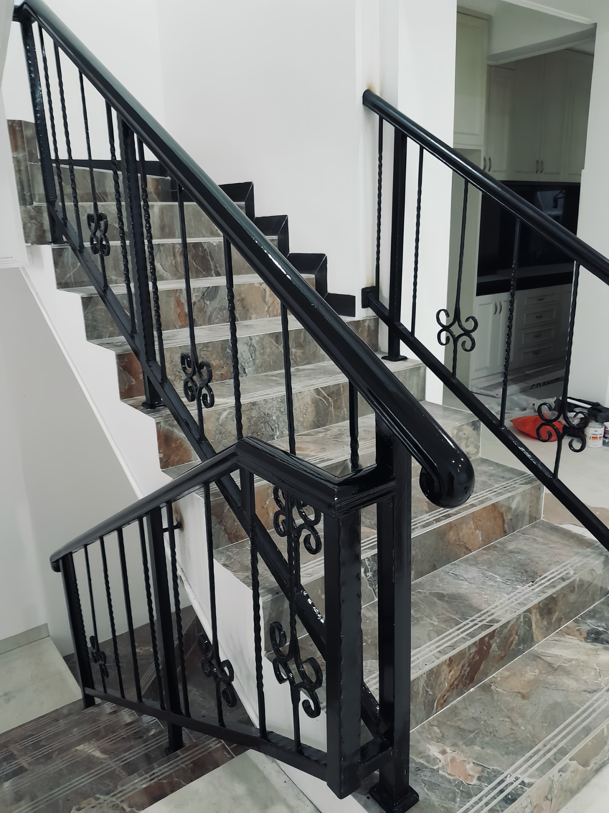
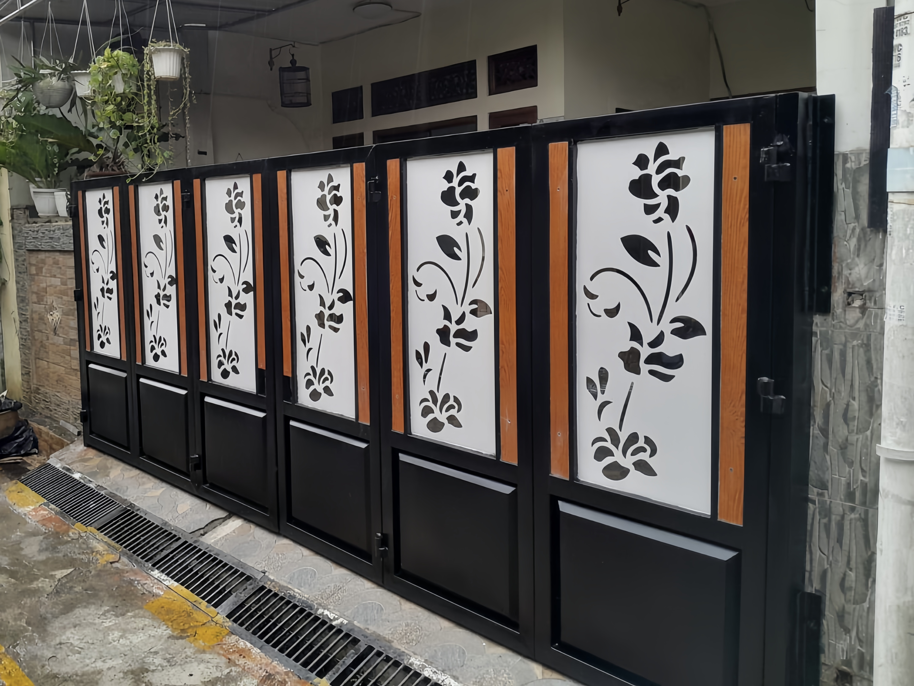
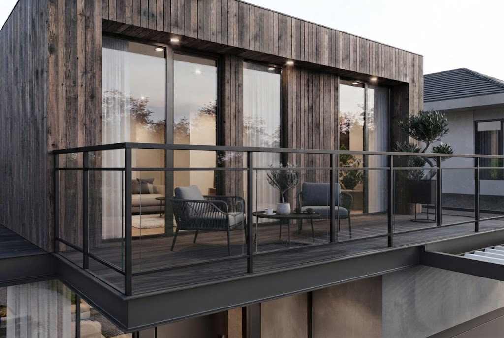
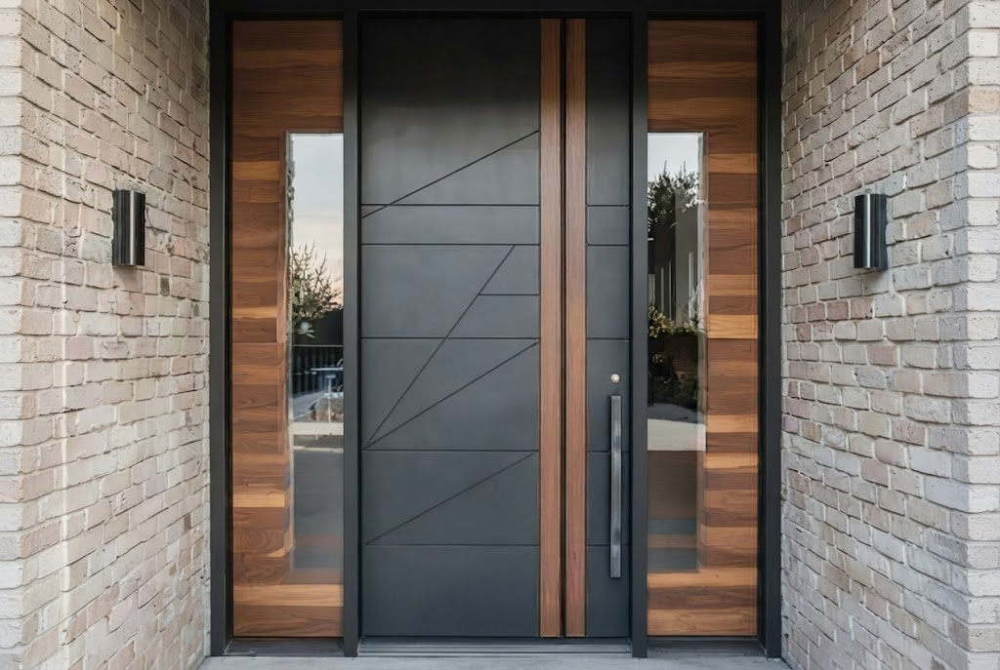
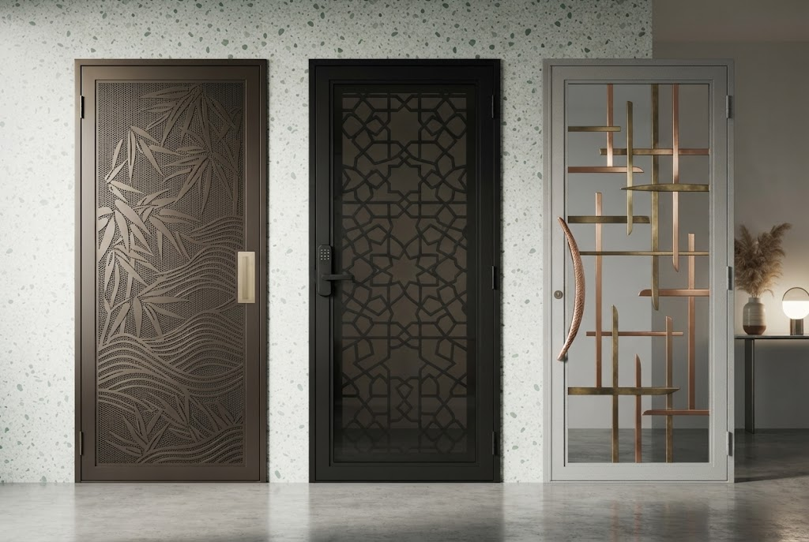
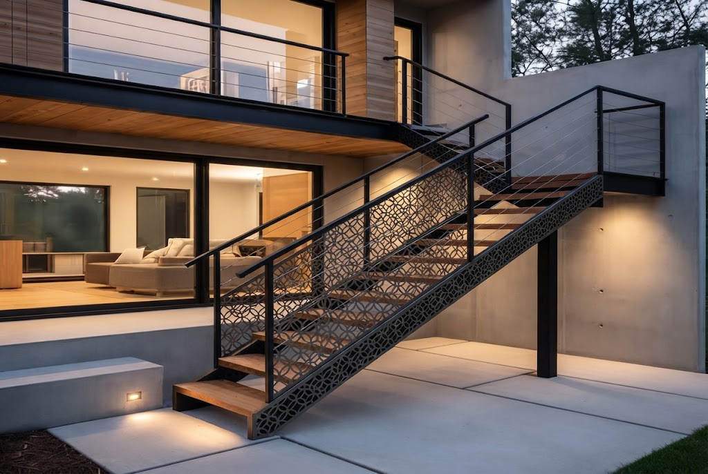
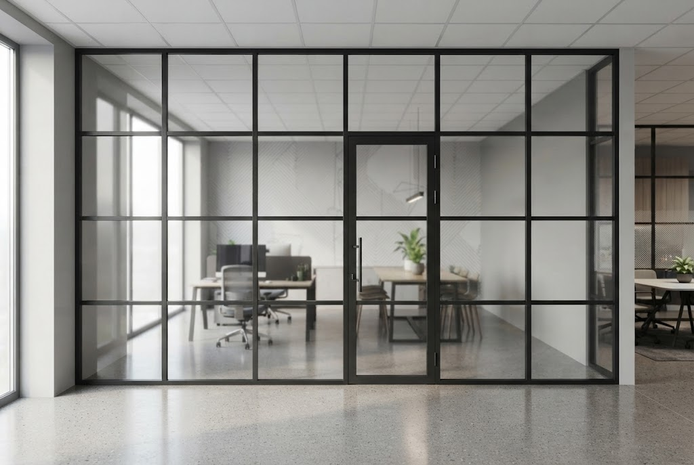

PRODUK & LAYANAN KAMI :
Kami menyediakan berbagai macam konstruksi besi dan aluminium berkualitas tinggi dengan pengerjaan yang kokoh, rapi, dan bergaransi di Depok.

Kanopi Minimalis
Pilihan atap Alderon, Spandek, atau Kaca dengan rangka besi hollow tebal anti-karat.

Railing Tangga
Pengaman tangga kombinasi besi dan kaca/kayu yang kokoh serta elegan untuk interior rumah.

Pagar Besi & Laser Cutting
Pagar minimalis modern dengan plat laser cutting motif custom sesuai keinginan Anda.

Pengaman Balkon
Railing balkon lantai atas yang aman, kuat, dan menambah estetika fasad bangunan.

Sliding Gate (Pintu Geser)
Pintu gerbang geser otomatis maupun manual yang kokoh untuk garasi rumah atau ruko.

Pintu Besi Pengaman
Pintu besi dobel atau tunggal untuk keamanan ekstra toko, gudang, maupun rumah utama.

Teralis Jendela & Pintu
Pelindung jendela dengan desain minimalis modern yang aman tanpa mengurangi keindahan.

Pintu & Jendela Aluminium
Kusen aluminium berkualitas (Alexindo/YKK) anti-rayap, kedap suara, dan tahan cuaca.

Tangga Besi (Putar/Lurus)
Konstruksi tangga besi bertingkat yang kokoh, aman menahan beban berat, dan efisien.

Partisi & Sekat Aluminium
Solusi pemisah ruangan kantor atau rumah yang bersih, modern, dan mudah dipasang.